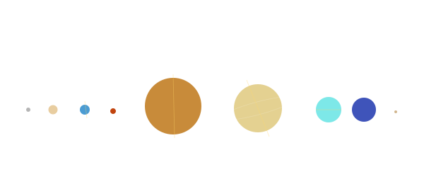

Planets

101 · zoom in
Planets — every world tells a different story.
Solar-system bodies are not interchangeable. Mars lost its atmosphere because its dynamo died. Venus rotates backward. Saturn's magnetic axis is uniquely aligned with its rotation axis. Uranus rolled onto its side. Earth has city lights you can see from orbit, and Mars doesn't. Each of these is a real, observed fact with a real, debated explanation. This tab is the place to read those explanations.
Six sections. The first three are about the planets themselves — axial tilt, magnetic fields, and the geometry of day and night. The next two are about the system: the moons that orbit each planet (Galileans, Titan, Triton, Charon), and the comparison-stats that let you see at a glance how Jupiter differs from Earth. The last section is a survey of the spacecraft actively studying each planet right now, in 2026 — what's at Mars (seven orbiters, multiple agencies), at Jupiter (Juno), at Venus (Akatsuki), and the long absences elsewhere.
Every section pairs with a visualisation on /explore. The yellow spin axis you see when you zoom in on a planet ↔ the axial-tilt article. The cyan magnetic axis (lens-gated) ↔ the magnetic-fields article. The active orbiter glyphs ↔ the spacecraft-survey article. Toggle the lens on /explore to see the physics overlays, then come back here to read what they mean.
→ Pick a section from the right rail to start reading.